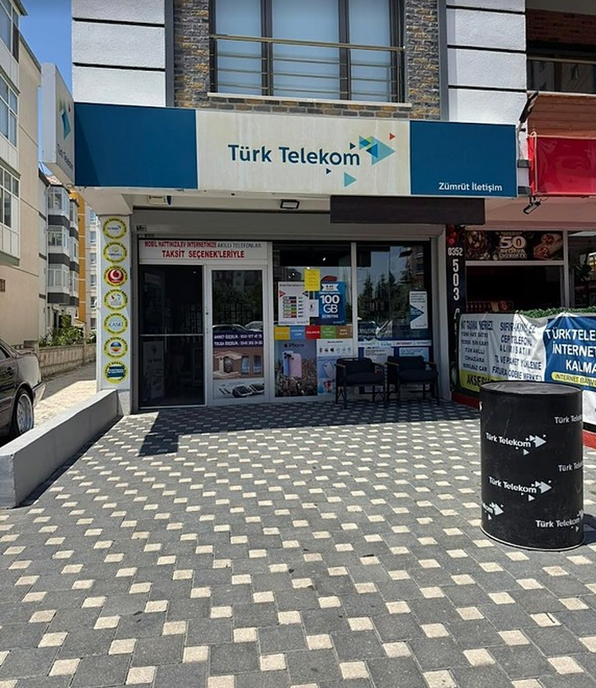

Öne çıkan cihazlar. Sıfır ve ikinci el, mağazamızda inceleyin.
Tüm ürünleri görünAksesuarlar. Koruyun, şarj edin, dinleyin.
Tüm aksesuarlarBiz kimiz?
Zümrüt İletişim
Kayseri Kocasinan’da, Kadir Has Caddesi üzerindeki mağazamızda iPhone başta olmak üzere Samsung, Xiaomi ve diğer popüler markaların sıfır ve ikinci el telefon, tablet ve aksesuarlarını bir araya getiriyoruz.
Telefon0542 303 24 83
AdresHoca Ahmet Yesevi, Kadir Has Cd. No:131/A, 38090 Kocasinan/Kayseri
Çalışma saatleri
Hafta içi09:00 – 20:30
Cumartesi09:00 – 20:30
PazarKapalı

Kadir Has Cd. No:131/AKocasinan / Kayseri
Haritada aç